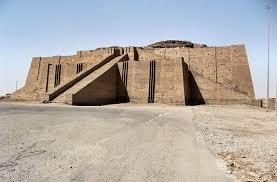

Ancient Mesopotamia
Period: 3500 – 539 BCE
Mesopotamia, the land between the Tigris and Euphrates rivers, is often called the cradle of civilization because it produced the first cities, the first written language, and the first known legal code. The Sumerians developed cuneiform writing around 3400 BCE, originally just to track trade and grain, but it evolved into a system capable of recording epic literature, including the Epic of Gilgamesh, one of the oldest surviving works of fiction in human history. Their innovations in irrigation, mathematics, and astronomy quietly underpin systems we still use today.
Type: Early Civilization